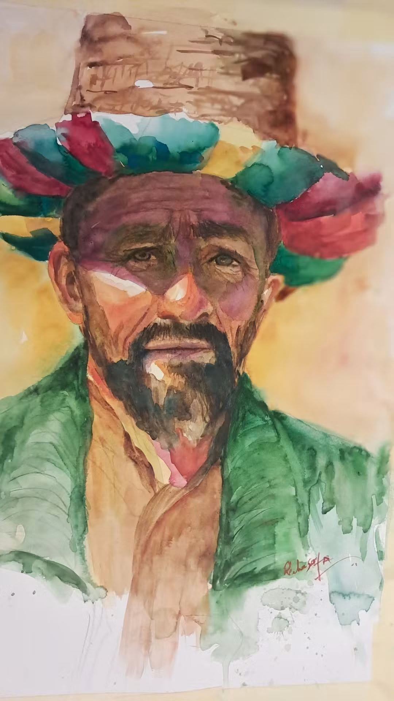

Sous le chapeau de vent et d’ombre
Sous le large chapeau tissé
de vent
et d’ombre,
battu par la chaleur,
Se tient un homme
des plaines oubliées,
qui veille,
taillé dans le soleil.
Un paysan né
de la poussière
et des labeurs,
Frère des sillons,
gardien des années.
Ses rides sculptées
par le souffle du chergui sont
des chemins sans nombre
Où passent les saisons,
lentes et vermeilles.
Son visage porte
l’ocre des collines,
Le poids des jours
que la terre façonne.
Dans ses yeux,
un horizon profond,
l’éclat discret des oasis,
On y lit le silence
des secondes
Et la mémoire
des récoltes
qui résonne.
Chaque trait raconte
une saison
qui décline,
Chaque ombre murmure :
« Je suis resté ici. »
Ses lèvres portent
un souffle ancien,
L’eau rare qui scintille
au fond de la mémoire,
Un murmure venu
des plaines brûlées.
Sa barbe,
telle une rivière de foin,
Dévale un visage
de pierres sculptées.
On y lit les récoltes,
les promesses,
les supplices,
Et la patience immense
que nul ne peut voir.
Il se tient là,
calme,
presque immobile,
Comme un arbre
enraciné dans la lumière,
Et pourtant tout en lui vacille,
Comme si son cœur parlait
à la poussière.
Ses mains —
on les imagine —
savent le grain,
La rugosité douce
du palmier,
la force
de la terre.
Des mains qui sèment
même en temps de chagrin,
Parce qu’il faut croire
encore à la lumière.
Homme des poussières,
homme des couleurs,
Tu portes sur toi
la fatigue des jours,
Mais ton regard,
troué de lueurs,
Connaît encore
le nom de l’amour.
Autour de toi,
les campagnes d’Algérie respirent,
Les plateaux vastes,
les sentiers couleur miel.
Le vent raconte les histoires
qu’il inspire,
Et ton chapeau retient
un peu de ciel.
Sous ton chapeau
où dansent les teintes,
La vie s’accroche,
malgré l’âpreté.
Et dans tes yeux
où la nuit se peint,
Brille un soleil
qui n’a pas renoncé.
Paysan des terres rousses
et des matins clairs,
Ton regard porte
un pays entier,
Et dans ton silence,
lourd comme la pierre,
On entend battre
le cœur de l’Algérie.
Djamel Metref
At Yenni le 18 novembre 2025
Portrait © Reche Safia ( لخضر )

← Tous les poèmes